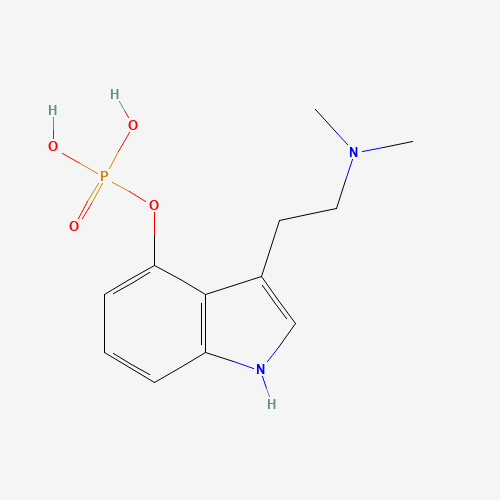

Psilocybin
4-Phosphoryloxy-N,N-dimethyltryptamine
Dosage
Doses below are for oral dried Psilocybe cubensis, the most commonly used species, and are general reference ranges, not recommendations. Potency varies from species to species, mushroom to mushroom, and even between the cap and stem of a single specimen, so start low. The commonly cited figure is 10–12 mg of psilocybin per gram of dried mushrooms.
| Level | Dried mushrooms | Psilocybin |
|---|---|---|
| Threshold | 0.25–0.5 g | ~2.5 mg |
| Light | 0.5–1 g | 2.5–10 mg |
| Common | 1–2.5 g | 10–25 mg |
| Strong | 2.5–5 g | 25–50 mg |
| Heavy | 5 g+ | 50 mg+ |
Duration: onset 20–45 minutes, come-up 1–1.5 hours, peak 2–2.5 hours, offset 2.5–3.5 hours, with after-effects lasting 4–24 hours. Total duration is roughly 6–8 hours.
Tolerance: tolerance builds almost immediately after a dose. It takes about 3 days to fall by half and about 7 days to return to baseline, so spacing doses at least a week apart avoids diminished effects.
Source: PsychonautWiki (Psilocybin mushrooms).
Overview
Psilocybin is a naturally occurring psychedelic prodrug found in over 200 species of fungi. Once ingested, it is rapidly dephosphorylated to psilocin, which acts as a potent serotonin 5-HT2A receptor agonist in the brain. This binding — particularly in the prefrontal cortex — produces profound alterations in perception, thought, and sense of self. Neuroscientist Robin Carhart-Harris's research has shown that psilocybin dramatically suppresses activity in the brain's Default Mode Network (DMN), the system associated with self-referential thinking and the ego. The result is an experience of expanded, unconstrained consciousness.

History
Psilocybin mushrooms have been used ceremonially for thousands of years. Stone mushroom effigies from pre-Columbian Mesoamerica date back to 1000 BCE. The Mazatec people of Oaxaca, Mexico preserved an unbroken tradition of mushroom use for healing and divination. Spanish missionaries in the 16th century documented and attempted to suppress this practice, calling the mushrooms teonanácatl — "flesh of the gods." In 1957, R. Gordon Wasson became the first Westerner to participate in a Mazatec ceremony under the guidance of María Sabina, and published his account in LIFE magazine — igniting worldwide interest. The following year, Swiss chemist Albert Hofmann (who had also synthesized LSD) isolated psilocybin and psilocin from Psilocybe mexicana, making it available for scientific study.

The Harvard Experiments
In the early 1960s, Timothy Leary and Richard Alpert (later Ram Dass) ran the Harvard Psilocybin Project — administering psilocybin to prisoners, theologians, and artists. The Good Friday Experiment (1962), designed by Walter Pahnke, gave psilocybin or placebo to divinity students attending a chapel service. Over 60% of those who received psilocybin reported a full mystical experience — indistinguishable by established criteria from the peak experiences described by the world's great mystics. A 25-year follow-up confirmed the experience remained one of the most meaningful of their lives. Political pressure ended the Harvard research in 1963 and drove psychedelic science underground for decades.
Effects
Effects typically onset 20–60 minutes after ingestion and last 4–6 hours. Common experiences include visual and geometric hallucinations, synesthesia, altered time perception, emotional amplification, and profound introspection. At moderate doses, users often experience what researcher Simon Powell describes as contact with "the Other" — a sense of receiving meaningful information from an intelligence beyond ordinary cognition. At higher doses, ego dissolution occurs: the boundary between self and world dissolves, often producing states of unity, timelessness, and what subjects consistently describe as more real than everyday life. The DMN suppression measured in brain scans corresponds directly with the subjective sense of self disappearing.
- Spontaneous body high
- Tactile enhancement
- Pupil dilation
- Nausea (come-up)
- Yawning
- Muscle weakness
- Changes in felt gravity
- Elevated heart rate
- Colour enhancement
- Closed-eye geometry
- Open-eye geometry
- Tracers & after-images
- Pattern recognition enhancement
- Depth perception distortion
- Environmental morphing
- Internal hallucinations (high doses)
- Introspection
- Analysis enhancement
- Creativity enhancement
- Conceptual thinking
- Emotional amplification
- Time distortion
- Thought loops
- Ego dissolution (high doses)
- Mystical states
- Auditory enhancement
- Auditory distortions
- Auditory hallucinations (high doses)
- Music appreciation enhancement
Research
The modern research renaissance began in 2006 when Roland Griffiths at Johns Hopkins published a landmark study showing that a single dose of psilocybin produced mystical experiences that participants rated among the most meaningful of their lives — and that these experiences produced lasting positive changes in mood, behavior, and outlook. The FDA granted psilocybin Breakthrough Therapy designation for major depressive disorder in 2018 and treatment-resistant depression in 2019. Recent trials show 70–80% response rates for treatment-resistant depression, with effects lasting months from a single session. Psilocybin also shows profound efficacy for end-of-life anxiety, tobacco addiction (80% abstinence at 6 months in one Johns Hopkins study), alcohol use disorder, and OCD.
Philosophy & Meaning
Psilocybin occupies a unique position at the intersection of science, philosophy, and spirituality. Terence McKenna argued that psilocybin functions as a conduit for receiving information — that "it is a phenomenon unto itself with an enormous potential for transforming human beings — not simply the people who take it, but society." Simon Powell proposes that psilocybin, by altering the neurochemistry of the brain, enables novel patterns of information to emerge, allowing consciousness to access dimensions of reality normally screened out by ordinary perception. Whether interpreted biologically, philosophically, or spiritually, the consistency of the experiences across cultures, centuries, and individuals suggests psilocybin touches something fundamental about the nature of consciousness.
Legal Status
Psilocybin is Schedule I under US federal law. Ann Arbor decriminalized natural psychedelics in 2020. Oregon legalized regulated psilocybin therapy services in 2020 (Measure 109), with licensed service centers operating since 2023. Colorado passed Proposition 122 in 2022, creating a regulated framework for psilocybin and other natural psychedelics. Cities including Denver, Seattle, Detroit, and Washington D.C. have decriminalized possession. In the UK and Netherlands, fresh psilocybin mushrooms remain legal; truffles containing psilocybin are sold legally in Dutch smart shops.
Harm Reduction
Set (mindset) and setting (environment) are the primary determinants of psilocybin experience quality — more so than dose. Approach the experience with clear intention and in a safe, comfortable space. Having a trusted, sober guide or sitter is strongly recommended, especially at doses above 3g dried mushrooms. Avoid combining with lithium (seizure risk), MAOIs, or stimulants. Those with a personal or family history of psychosis or schizophrenia should avoid psilocybin. Difficult experiences ("bad trips") are often the most therapeutically valuable when properly supported. Integration — processing the experience through reflection, journaling, or therapy — dramatically amplifies and extends benefits.
Further Reading
A curated library of essential texts on psilocybin mushrooms.
View the Psilocybin Library →This page is for educational purposes only. Nothing here constitutes legal, medical, or therapeutic advice. Know your local laws.